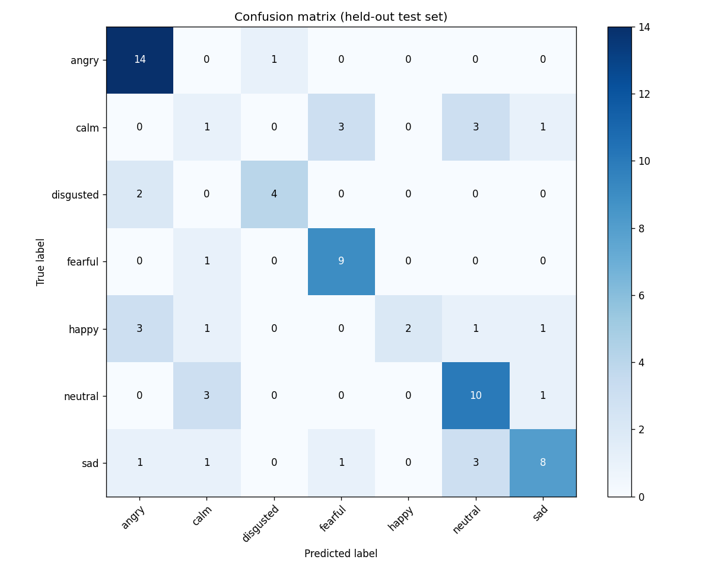
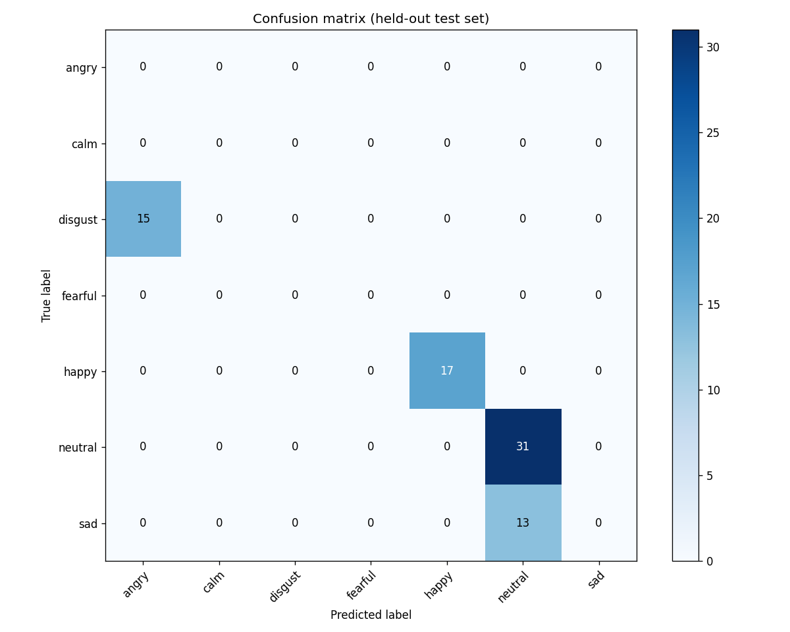
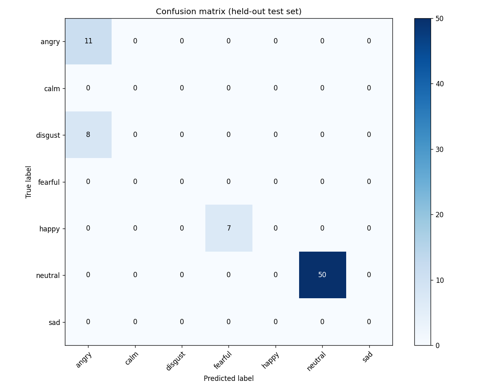
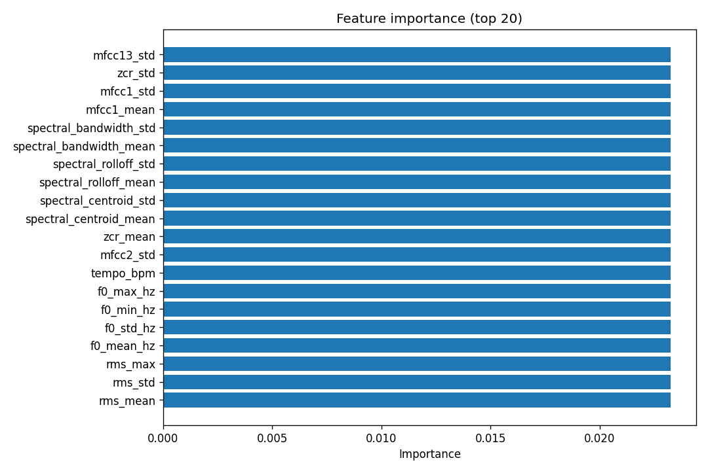

Generated 2026-03-24 02:38 UTC
For best formatting, open summary.md in your editor or viewer. Figures below reference files in this folder.
# Analysis report
**Input:** `survey_long_ratings.csv`
**Rows:** 295
## Linear mixed models (random intercept: participant)
Each model: **DV ~ C(design_cell)** with a random intercept for `response_id`. This accounts for repeated measures (five clips per person). We report a likelihood-ratio test vs. an intercept-only model (same random structure).
### Outcome: `naturalness`
- N clips = 295, N participants = 59
- LRT vs. null: χ²(3) = 0.285, p = 0.9629
- **Note:** Optimizer did not fully converge; interpret with caution.
- Approx. ICC (participant): 0.033
```
Mixed Linear Model Regression Results
========================================================================================
Model: MixedLM Dependent Variable: naturalness
No. Observations: 295 Method: REML
No. Groups: 59 Scale: 1.2448
Min. group size: 5 Log-Likelihood: -457.6942
Max. group size: 5 Converged: No
Mean group size: 5.0
----------------------------------------------------------------------------------------
Coef. Std.Err. z P>|z| [0.025 0.975]
----------------------------------------------------------------------------------------
Intercept 2.864 0.100 28.505 0.000 2.667 3.061
C(design_cell)[T.tone_emotional_word_neutral] -0.241 0.176 -1.369 0.171 -0.586 0.104
C(design_cell)[T.tone_neutral_word_emotional] -0.405 0.180 -2.255 0.024 -0.757 -0.053
C(design_cell)[T.tone_neutral_word_neutral] -0.108 0.188 -0.576 0.565 -0.478 0.261
Group Var 0.042 0.048
========================================================================================
```
### Outcome: `trust`
- N clips = 295, N participants = 59
- LRT vs. null: χ²(3) = 13.982, p = 0.00293
- Approx. ICC (participant): 0.101
```
Mixed Linear Model Regression Results
========================================================================================
Model: MixedLM Dependent Variable: trust
No. Observations: 295 Method: REML
No. Groups: 59 Scale: 1.2021
Min. group size: 5 Log-Likelihood: -461.0003
Max. group size: 5 Converged: Yes
Mean group size: 5.0
----------------------------------------------------------------------------------------
Coef. Std.Err. z P>|z| [0.025 0.975]
----------------------------------------------------------------------------------------
Intercept 2.548 0.107 23.851 0.000 2.339 2.758
C(design_cell)[T.tone_emotional_word_neutral] 0.079 0.174 0.454 0.650 -0.262 0.420
C(design_cell)[T.tone_neutral_word_emotional] -0.484 0.182 -2.667 0.008 -0.840 -0.128
C(design_cell)[T.tone_neutral_word_neutral] 0.453 0.186 2.436 0.015 0.089 0.817
Group Var 0.135 0.072
========================================================================================
```
### Outcome: `emotion_strength`
- N clips = 295, N participants = 59
- LRT vs. null: χ²(3) = 55.493, p = 5.389e-12
- Approx. ICC (participant): 0.003
```
Mixed Linear Model Regression Results
========================================================================================
Model: MixedLM Dependent Variable: emotion_strength
No. Observations: 295 Method: REML
No. Groups: 59 Scale: 1.3618
Min. group size: 5 Log-Likelihood: -466.7182
Max. group size: 5 Converged: Yes
Mean group size: 5.0
----------------------------------------------------------------------------------------
Coef. Std.Err. z P>|z| [0.025 0.975]
----------------------------------------------------------------------------------------
Intercept 3.511 0.102 34.572 0.000 3.312 3.710
C(design_cell)[T.tone_emotional_word_neutral] -0.305 0.184 -1.658 0.097 -0.667 0.056
C(design_cell)[T.tone_neutral_word_emotional] -1.153 0.186 -6.187 0.000 -1.519 -0.788
C(design_cell)[T.tone_neutral_word_neutral] -1.302 0.197 -6.621 0.000 -1.688 -0.917
Group Var 0.004 0.050
========================================================================================
```
### Outcome: `tone_vs_words`
- N clips = 295, N participants = 59
- LRT vs. null: χ²(3) = 6.581, p = 0.08653
- Approx. ICC (participant): 0.117
```
Mixed Linear Model Regression Results
========================================================================================
Model: MixedLM Dependent Variable: tone_vs_words
No. Observations: 295 Method: REML
No. Groups: 59 Scale: 1.0959
Min. group size: 5 Log-Likelihood: -449.3432
Max. group size: 5 Converged: Yes
Mean group size: 5.0
----------------------------------------------------------------------------------------
Coef. Std.Err. z P>|z| [0.025 0.975]
----------------------------------------------------------------------------------------
Intercept 3.452 0.104 33.275 0.000 3.249 3.656
C(design_cell)[T.tone_emotional_word_neutral] 0.182 0.166 1.095 0.273 -0.144 0.508
C(design_cell)[T.tone_neutral_word_emotional] -0.478 0.172 -2.789 0.005 -0.815 -0.142
C(design_cell)[T.tone_neutral_word_neutral] -0.150 0.177 -0.844 0.399 -0.497 0.198
Group Var 0.145 0.072
========================================================================================
```
## Supplementary: one-way ANOVA & Kruskal–Wallis (independence assumption)
These treat each **clip rating** as independent. Your data are **not** independent (five clips per person), so p-values here can be anti-conservative. They are shown for transparency and for comparison with textbook ANOVA.
### `naturalness`
- One-way ANOVA: F = 1.820, p = 0.1435
- Kruskal–Wallis: H = 4.557, p = 0.2073
### `trust`
- One-way ANOVA: F = 4.643, p = 0.003458
- Kruskal–Wallis: H = 13.237, p = 0.004152
### `emotion_strength`
- One-way ANOVA: F = 22.047, p = 6.813e-13
- Kruskal–Wallis: H = 55.262, p = 6.037e-12
### `tone_vs_words`
- One-way ANOVA: F = 3.805, p = 0.01062
- Kruskal–Wallis: H = 9.534, p = 0.02297
## Supervised learning: perceived emotion from acoustic features
- **Backend:** `sklearn_hist_gbrt` (install OpenMP + `xgboost` and pass `--use-xgb` to force XGBoost)
- **Split:** `grouped_by_response_id`
- **Accuracy (test):** 0.640
- **Train / test clips:** 220 / 75
- **Classes:** 7 (angry, calm, disgusted, fearful, happy, neutral, sad)
### Classification report (test)
```
precision recall f1-score support
angry 0.70 0.93 0.80 15
calm 0.14 0.12 0.13 8
disgusted 0.80 0.67 0.73 6
fearful 0.69 0.90 0.78 10
happy 1.00 0.25 0.40 8
neutral 0.59 0.71 0.65 14
sad 0.73 0.57 0.64 14
accuracy 0.64 75
macro avg 0.66 0.59 0.59 75
weighted avg 0.66 0.64 0.62 75
```


## Supervised learning: true clip tone from acoustics
- **Target:** `intended_tone`
- **Backend:** `sklearn_hist_gbrt`
- **Split:** `grouped_by_stem`
- **Accuracy (test):** 0.632
- **Train / test clips:** 219 / 76
- **Classes:** 7 (angry, calm, disgust, fearful, happy, neutral, sad)
### Classification report (test)
```
precision recall f1-score support
angry 0.00 0.00 0.00 0
calm 0.00 0.00 0.00 0
disgust 0.00 0.00 0.00 15
fearful 0.00 0.00 0.00 0
happy 1.00 1.00 1.00 17
neutral 0.70 1.00 0.83 31
sad 0.00 0.00 0.00 13
accuracy 0.63 76
macro avg 0.24 0.29 0.26 76
weighted avg 0.51 0.63 0.56 76
```


## Supervised learning: true clip words-emotion from acoustics
- **Target:** `intended_words`
- **Backend:** `sklearn_hist_gbrt`
- **Split:** `grouped_by_stem`
- **Accuracy (test):** 0.803
- **Train / test clips:** 219 / 76
- **Classes:** 7 (angry, calm, disgust, fearful, happy, neutral, sad)
### Classification report (test)
```
precision recall f1-score support
angry 0.58 1.00 0.73 11
calm 0.00 0.00 0.00 0
disgust 0.00 0.00 0.00 8
fearful 0.00 0.00 0.00 0
happy 0.00 0.00 0.00 7
neutral 1.00 1.00 1.00 50
sad 0.00 0.00 0.00 0
accuracy 0.80 76
macro avg 0.23 0.29 0.25 76
weighted avg 0.74 0.80 0.76 76
```






